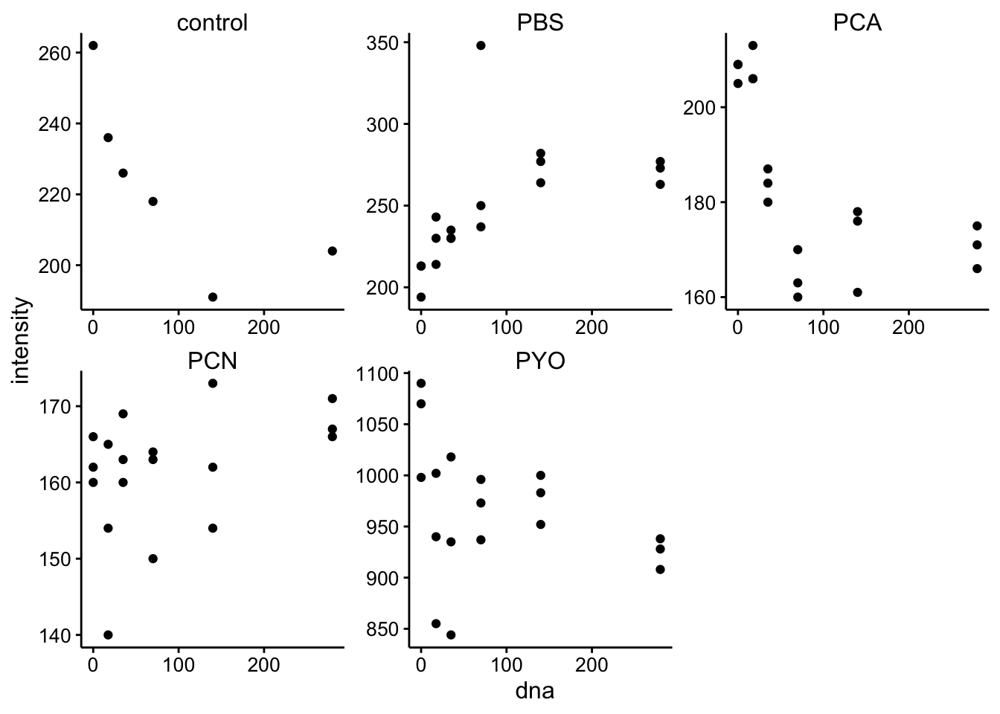
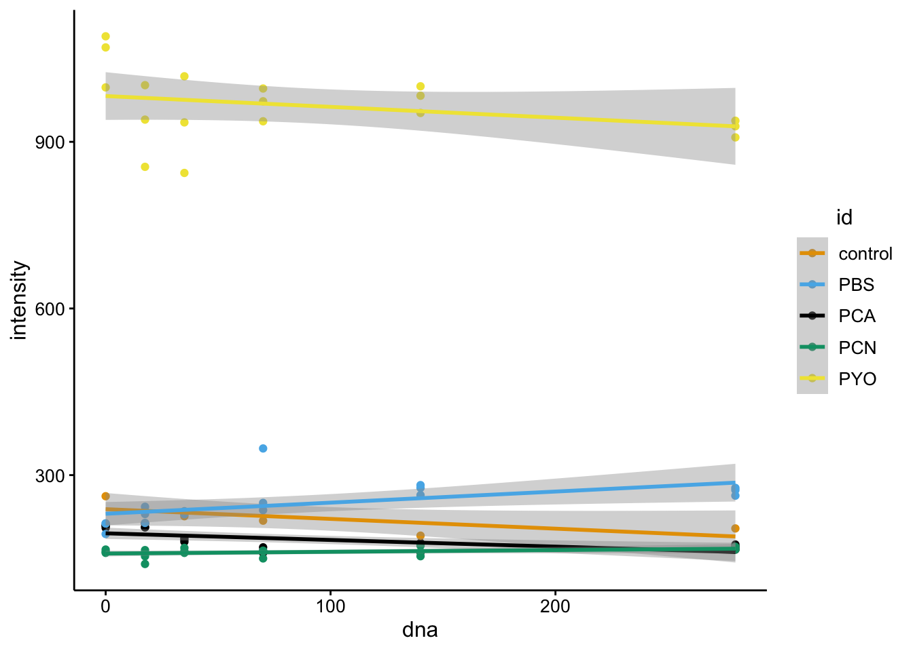
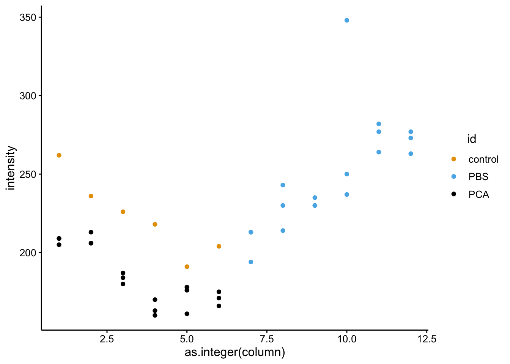
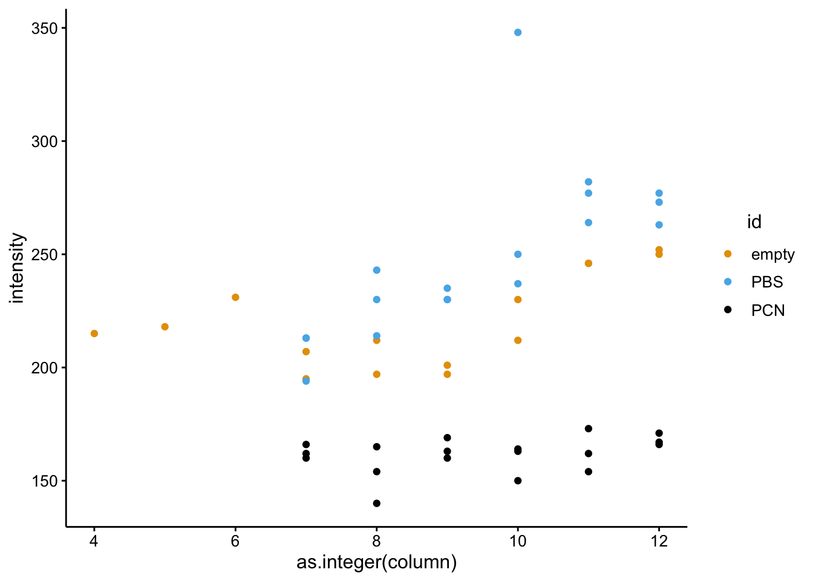
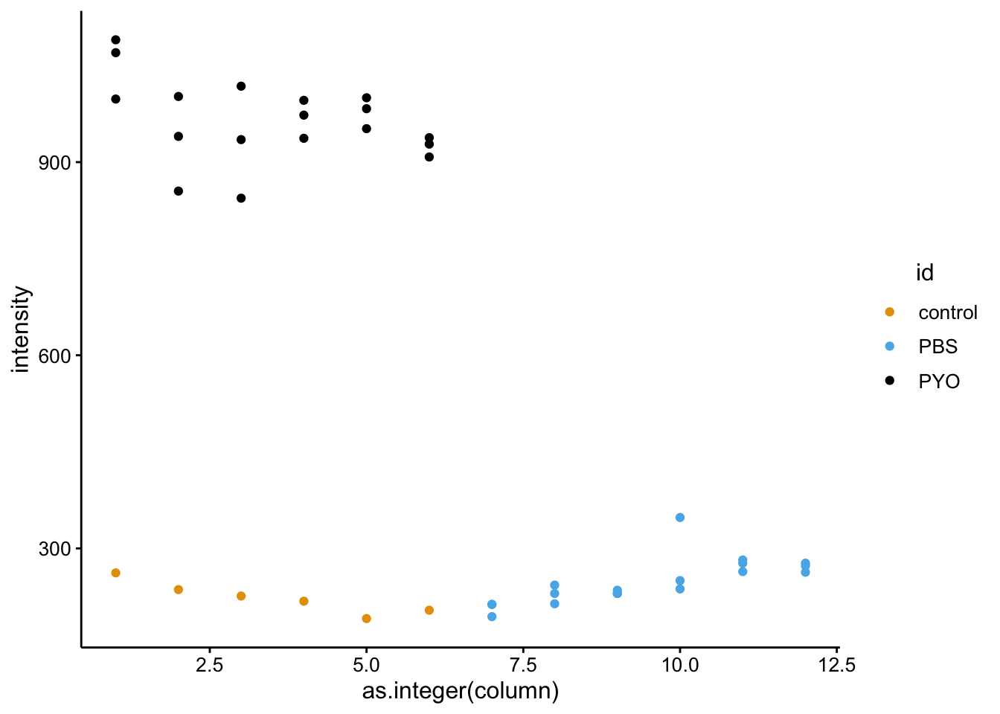
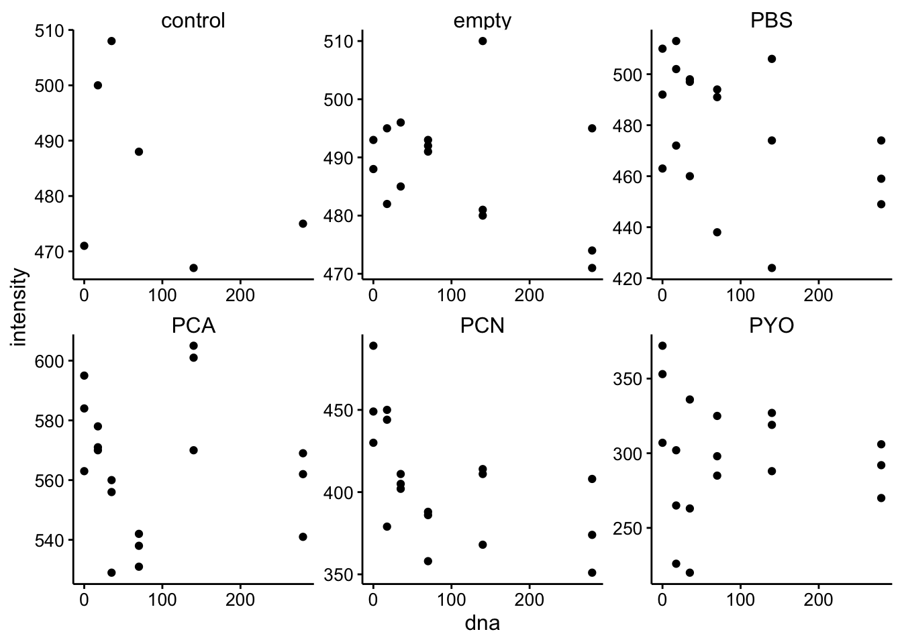
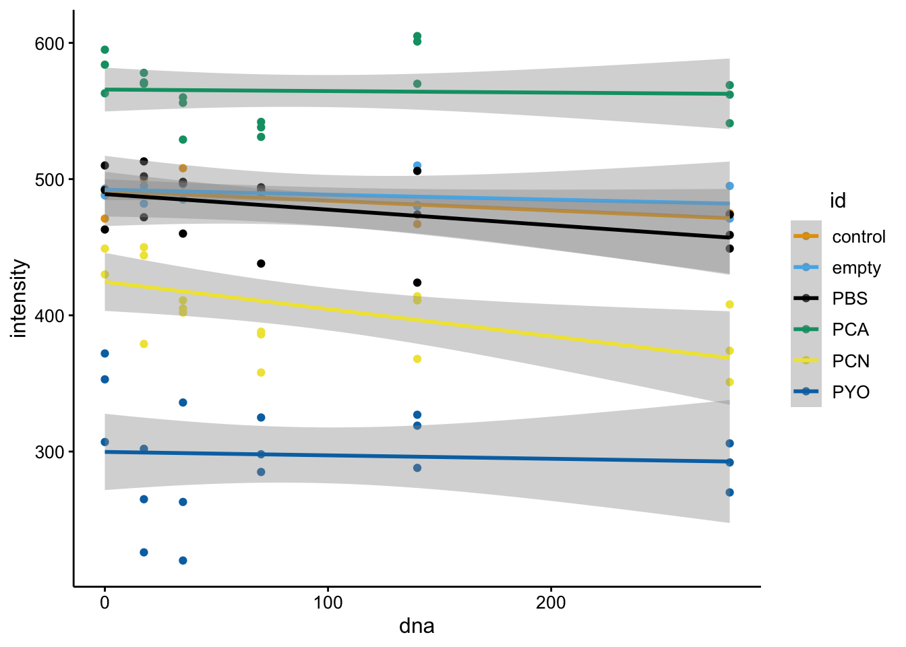
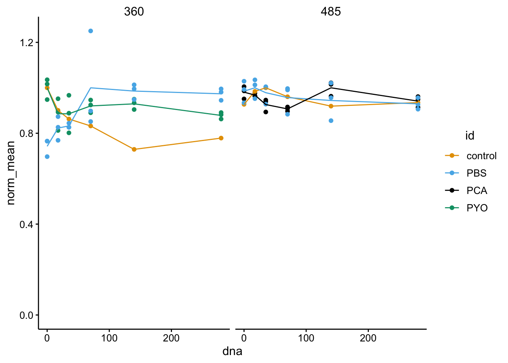
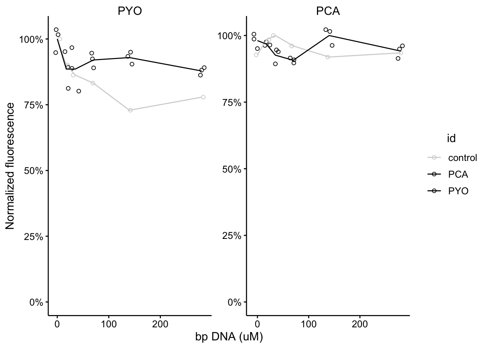

library(tidyverse)
library(cowplot)
library(viridis)
library(knitr)
library(kableExtra)
library(modelr)
library(broom)
knitr::opts_chunk$set(tidy.opts=list(width.cutoff=60),tidy=TRUE, echo = TRUE, message=FALSE, warning=FALSE, fig.align="center")
source("../../IDA/tools/plotting_tools.R")
theme_set(theme_1())Do reduced phenazines bind DNA in vitro? We would expect that their endogenous fluorescence would change upon binding. Will we see a change in fluorescence upon exposure to DNA?
90uM of each phenazine, titrating in calf thymus DNA from 2mg/mL stock.
135uL reduced phenazine 15uL of PBS + ctDNA (two fold dilutions)
6 concentrations from 0 to 280uM ctDNA (final)
triplicate of each measurement
df_360 <- read_csv("data/2019_10_09_PHZred_top_360-460.csv") %>%
gather(key = "column", value = "intensity", -row)
df_485 <- read_csv("data/2019_10_09_PHZred_top_485-528.csv") %>%
gather(key = "column", value = "intensity", -row)
df_meta <- read_csv("data/2019_10_09_PHZred_well_metadata.csv") %>%
gather(key = "column", value = "id", -row)
df_360_meta <- left_join(df_360, df_meta, by = c("row", "column")) %>%
mutate(dna = case_when(column %in% c(1, 7) ~ 0, column %in%
c(2, 8) ~ 17.5, column %in% c(3, 9) ~ 35, column %in%
c(4, 10) ~ 70, column %in% c(5, 11) ~ 140, column %in%
c(6, 12) ~ 280, ))
df_485_meta <- left_join(df_485, df_meta, by = c("row", "column")) %>%
mutate(dna = case_when(column %in% c(1, 7) ~ 0, column %in%
c(2, 8) ~ 17.5, column %in% c(3, 9) ~ 35, column %in%
c(4, 10) ~ 70, column %in% c(5, 11) ~ 140, column %in%
c(6, 12) ~ 280, ))ggplot(df_360_meta %>% filter(id %in% c("control", "PBS", "PCA",
"PCN", "PYO")), aes(x = dna, y = intensity)) + geom_point() +
facet_wrap(~id, scales = "free")
ggplot(df_360_meta %>% filter(id %in% c("control", "PBS", "PCA",
"PCN", "PYO")), aes(x = dna, y = intensity, color = id)) +
geom_point() + geom_smooth(method = "lm")
# ggplot(df_360_meta %>% filter(id=='empty'), aes(x =
# as.integer(column), y = intensity, color = row)) +
# geom_point()
# ggplot(df_360_meta %>% filter(id=='PBS'), aes(x =
# as.integer(column), y = intensity, color = row)) +
# geom_point()
# ggplot(df_360_meta %>% filter(id %in% c('empty','PBS')),
# aes(x = as.integer(column), y = intensity, color = id)) +
# geom_point()ggplot(df_360_meta %>% filter(id %in% c("control", "PBS", "PCA")),
aes(x = as.integer(column), y = intensity, color = id)) +
geom_point()
ggplot(df_360_meta %>% filter(id %in% c("empty", "PBS", "PCN")),
aes(x = as.integer(column), y = intensity, color = id)) +
geom_point()
ggplot(df_360_meta %>% filter(id %in% c("control", "PBS", "PYO")),
aes(x = as.integer(column), y = intensity, color = id)) +
geom_point()
ggplot(df_485_meta %>% filter(id %in% c("control", "empty", "PBS",
"PCA", "PCN", "PYO")), aes(x = dna, y = intensity)) + geom_point() +
facet_wrap(~id, scales = "free")
ggplot(df_485_meta %>% filter(id %in% c("control", "empty", "PBS",
"PCA", "PCN", "PYO")), aes(x = dna, y = intensity, color = id)) +
geom_point() + geom_smooth(method = "lm")
df_fig <- bind_rows(df_360_meta %>% group_by(id, dna) %>% mutate(mean = mean(intensity)) %>%
filter(id %in% c("PYO", "PBS", "control")) %>% mutate(ex = "360"),
df_485_meta %>% group_by(id, dna) %>% mutate(mean = mean(intensity)) %>%
filter(id %in% c("PCA", "PBS", "control")) %>% mutate(ex = "485"))
df_fig <- df_fig %>% group_by(id, ex) %>% mutate(max = max(mean)) %>%
mutate(norm_int = intensity/max, norm_mean = mean/max)
# ggplot(df_fig, aes(x = dna, y = norm_int, color = id, shape
# = ex)) + geom_point()
# ggplot(df_fig, aes(x = dna, y = norm_mean, color = id,
# shape = ex)) + geom_point()
# ggplot(df_fig, aes(x = dna, y = norm_mean, color = id,
# shape = ex, linetype = ex)) + geom_point(aes(y = norm_int))
# + geom_line() + ylim(0,NA)
ggplot(df_fig, aes(x = dna, y = norm_mean, color = id)) + geom_point(aes(y = norm_int)) +
geom_line() + ylim(0, NA) + facet_wrap(~ex)
# ggplot(df_fig %>% filter(id != 'PBS'), aes(x = dna, y =
# norm_mean, color = id)) + geom_jitter(aes(y = norm_int)) +
# geom_line() + ylim(0,NA)
facet_names <- list(`360` = "PYO", `485` = "PCA")
facet_labeller <- function(variable, value) {
return(facet_names[value])
}
ggplot(df_fig %>% filter(id != "PBS"), aes(x = dna, y = norm_mean,
color = id)) + geom_jitter(aes(y = norm_int), shape = 21) +
geom_line() + facet_wrap(~ex, labeller = facet_labeller,
scales = "free") + scale_color_manual(values = c("light gray",
"black", "black")) + scale_y_continuous(labels = scales::percent,
limits = c(0, NA)) + labs(x = "bp DNA (uM)", y = "Normalized fluorescence")
Conclusions: does not seem to be signficant fluorescence change compared to empty wells. Note that there is nonzero variation between wells in plate reader. Reduced phenazines do not bind strongly to DNA.
Caveats: 90uM phenazine may be well below the Kd, so this only provides some evidence that there’s no binding at this concentration of phenazine.